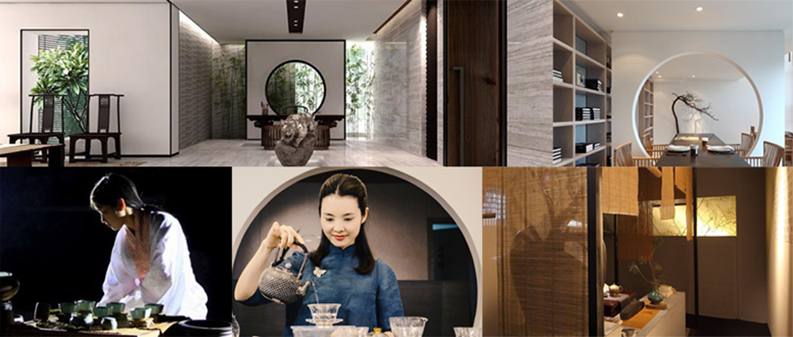

铁釜在我国有文字记载的历史，可以追溯到秦汉。唐宋时期，经茶圣陆羽的推广介绍，煮茶式开始流行，铁釜（时名为汤釜）正是当时中国茶道里十分流行的一种煮水器具。在与中国的文化交流中，日本僧人将制釜工艺及绿茶树种、制茶方法、茶道带回本国。在相当长的一段时间内日本人并没有对铁釜进行改造，只是遵循他们在中国学到的制造方法、使用方式延续着。
Iron kettle in our country, the history of written records can be traced back to the Qin and Han dynasties. Tang and Song Dynasties, the promotion by d tea became popular, iron kettle (known as soup kettle) is a kind of water boiling apparatus was very popular in the Chinese tea ceremony. In the China and cultural exchanges, the Japanese monk kettle process and Green Tea species, tea, tea ceremony back home. For a long period of time, the Japanese did not transform the iron kettle,the.

大约在五百年前，日本茶圣千利休确立日本茶道，铁釜（汤釜）成为日本茶道必备器具。日本茶道的影响是自上而下的，首先在各藩主大名之间流行，再到武士阶层，再传播到平民。大约四百年前，日本盛冈南部藩主在其南部辖区内大量聘任制釜师，最初目的是为促进当地制造工业，但因各代南部藩主对茶道的热衷，不断推动铁釜制作的创新，市场需求也由此增加。尤其第八代藩主利雄公，更是拜师在第三代御釜师—小泉仁左卫门的门下，尝试自己制作茶具。一种新的煮水工具—铁壶即在此时产生，即按茶道用的铁汤釜尺寸大小缩小，并加上壶嘴和把手。
铁壶一经问世就广受欢迎，因南部盛冈地区在日本东北部，此地自古以来便以出产砂铁、岩铁等良质铁矿闻名，铁壶作为比当时民众家中的陶壶更耐用也更实用的器具，逐渐在民间流行开来。此风后来也传到京都。京都地区素来更为讲究器物之精美细致，因此京都的铁壶在壶身与盖子方面跟南部铁壶有着鲜明的区别。京都的铁壶是铜盖，不易生锈，壶身上则经常出现富士山、琵琶湖的近江八景、树木、樱花等日本特色的装饰图案，典雅华丽；而且在二百多年前便出现如龙文堂、龟文堂、金寿堂等著名堂号，为后来铁壶的制作从实用器物逐渐上升到艺术的创作提供了机遇。
About five hundred years ago, Japan established the Japanese tea sage Sen Rikyu (Tang Fu), iron kettle has become necessary for the Japanese tea ceremony. Influence of the Japanese tea ceremony is top-down, first popular among the Lord name, then to the samurai,
and then spread to the civilian. About four hundred years ago,
Japan's southern Morioka Lord in the southern area of a large number of appointment kettle division, was originally designed for the promotion of local manufacturing industry, but the southern Lord of tea are keen to continue to promote innovation, iron kettle production, market demand is also increasing. Especially the eighth generation Lord Toshio, is the apprentice in the third generation of imperial division - Koizumi left Wei Ren kettle door, try to make your own tea. A new tool - iron kettle to boil water in this time,